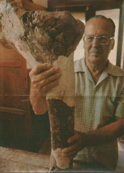

Llewellyn Ivor Price
De TriânguloLeaks, a enciclopédia do Triângulo Mineiro
|
 CC BY-SA Foto de terceiros, via Wikimedia Commons — consulte a página do arquivo para o nome do autor e a versão exata da licença antes de reutilizar. Sobre o licenciamento. | |
| Dados pessoais | |
|---|---|
| Nascimento | , Santa Maria, Rio Grande do Sul |
| Falecimento | , Rio de Janeiro |
| Atuação | |
| Área | Paleontologia |
| Conhecido por | Coleta do Staurikosaurus (1936), primeiro dinossauro descrito no Brasil; pesquisas em Peirópolis (Uberaba) |
| Prêmios | Prêmio José Bonifácio de Andrada e Silva, Sociedade Brasileira de Geologia (1980) |
{kind=link}
Llewellyn Ivor Price (–) foi um paleontólogo pioneiro no Brasil, filho de pais norte-americanos, formado em zoologia e geologia. É considerado um dos fundadores da paleontologia de vertebrados brasileira, responsável pela coleta, em 1936, do Staurikosaurus — o primeiro dinossauro descoberto no Brasil — e por décadas de pesquisa nos afloramentos fossilíferos de Peirópolis, distrito de Uberaba[1].
Formação e carreira [editar]
Formação e carreira [editar]
Nascido em Santa Maria (RS) em 1905, filho de pais americanos, Price estudou química nos Estados Unidos e obteve formação em zoologia e geologia, chegando a lecionar na Universidade Harvard antes de retornar ao Brasil para se dedicar à pesquisa paleontológica [1]. Em 1936, coletou o Staurikosaurus, considerado o primeiro dinossauro descoberto em território brasileiro, marco fundador da paleontologia de dinossauros no país.
O trabalho em Peirópolis e Uberaba [editar]
O trabalho em Peirópolis e Uberaba [editar]
Price dedicou parte importante de sua carreira ao estudo das camadas fossilíferas do Cretáceo Superior de Peirópolis, distrito de Uberaba (MG), cuja exploração paleontológica sistemática se desenvolveu ao longo do século XX a partir da extração de calcário na região [2]. Em reconhecimento a esse trabalho, o centro de pesquisa criado no distrito em 1991/1992 recebeu seu nome: o Centro de Pesquisas Paleontológicas "Llewellyn Ivor Price", vinculado à Universidade Federal do Triângulo Mineiro (UFTM) e sediado no Complexo Cultural e Científico de Peirópolis (CCCP) [1].
Legado [editar]
Legado [editar]
Em 1980, ano de sua morte, recebeu o prêmio José Bonifácio de Andrada e Silva, concedido pela Sociedade Brasileira de Geologia, em reconhecimento a suas contribuições à geologia e à paleontologia[1]. O centro de pesquisa e o museu que herdaram seu nome em Peirópolis continuam ativos, mantendo acervo de fósseis de titanossauros, crocodilomorfos e outros répteis do Cretáceo descritos a partir de seu trabalho de campo.
Localização [editar]
Localização [editar]
Local principal associado ao seu trabalho de campo: Peirópolis, Uberaba, Minas Gerais.
Referências
- ↑ Wikipedia (em inglês). "Llewellyn Ivor Price" (consultado em 2026), usada como fonte terciária para nascimento/morte, formação, o Staurikosaurus e o prêmio de 1980 — texto reescrito com palavras próprias nesta seção. en.wikipedia.org/wiki/Llewellyn_Ivor_Price.
- ↑ TriânguloLeaks. Peirópolis, seção "Da extração de calcário à paleontologia" — histórico da exploração paleontológica do distrito, com fontes próprias (Museu dos Dinossauros e UFTM/CCCP).